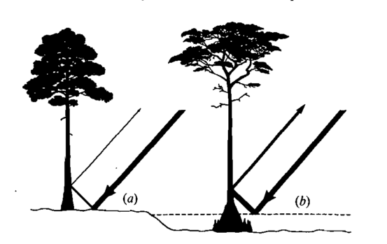
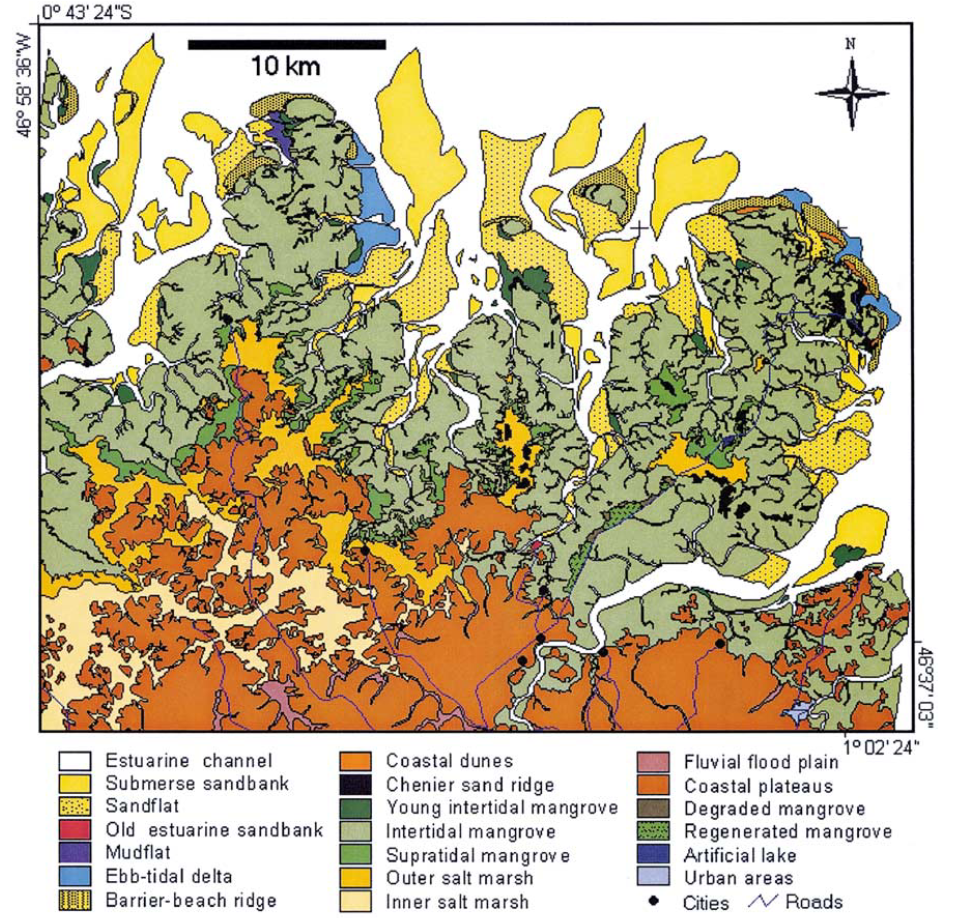

5.3 Geomorphology
5.3.1 Hess et al, 1990
“Radar detection of flooding beneath the forest canopy: A review” (Hess, Melack, and Simonett 1990)
Key significance: This reviews many of the earliest studies that employ SAR imagery for mapping of inundated versus non-inundated forest types.
Key notes:
Of key importance for mapping of flooded vs. non-flooded forests is the fact that SAR imagery has a much more intense return off of water versus dry soil or trunks. Thus, the “double-bounce” effect off of a water surface is much stronger than that from soil & then tree.
An excellent schematic of this effect is shown below:

Accuracy of flood detection
Some have found an issue in that canopy that is too dense may attenuate the signal at too great of a degree, and thus the difference between the more intense return from flooded forests may not be apparent (L-band).
Additionally, presence of herbaceous vegetation (e.g., salt marshes) adjacent to flooded forests may erroneously appear as “flooded” forest using L-band. The bright return may be a result of the fleshy, vertically-oriented leaf stalks. These areas are still flooded, however, and thus it may still be effective for mapping of flooding extent, perhaps just not between flooded forest vs. flooded non-forest.
Magnitude of enhancement
Enhancement from flooded forest may range from approximately 2 - 10 dB.
Effect of radar parameters
Of primary importance are three considerations:
- Incidence angle - angles at which imagery is collected vary greatly, and may be an important parameter for efficacy of detecting flooding
- The most effective angle may depend on the ecosystem type. Flooded forests verses swamps may exhibit different dominant backscattering mechanisms.
- Polarization - the polarization of the radar may effect the efficacy of the return in identifying inundated landscapes
- Majority of studies have used HH polarization (Seasat, SIR-A, SIR-B)
- Qualitative assessments are consistent in findings that like-polarized scenes (HH or VV) are more effective at identifying flooded forests via L-band
- Frequency - use of P-, L-, or X-band may have different dominant backscattering mechanisms, and thus may influence detection of inundation.
- L-band commonly used due to ability to penetrate dense canopies, however may have have some limitations
- P-band may be promising for mapping of inundated forests in forests that are very tall or with very dense canopies
Applications in flooded forest research
Critical to examine the temporal and spatial variability of water cover. An important component is availability of ground data on extent and time of flooding at the time of imaging, particularly tricky for tidally inundated forests.
Additionally, for forests with aboveground root structures (i.e., mangroves), scattering of the signal by aboveground roots may reduce the signal and reduce ability to identify inundated forests.
5.3.2 Imhoff, 1990
“The derivation of a sub-canopy digital terrain model of a flooded forest using synthetic aperture radar” (Imhoff and Gesch 1990)
Key significance: This is one of the earliest uses of SAR imagery to map digital terrain models and understand tidal inundation in a mangrove forest. The study couples both SAR imagery as well as field measurements of tidal inundation in a novel manner, and provides discussion of syncing the timing of imagery acquisition with hydrological records.
Key notes:
The study employed data from both the SIR-B mission as well as tide surface information to create a digital terrain model in southern Bangladesh.
They note the importance of hydrology and geomorphology on mangrove health, citing Lugo and Snedaker’s discussion in which they note that “tidal dynamics” and “water chemistry” are the two most important factors on mangrove health.
The radar data used for the study consisted of three HH polarized L-band radar images, acquired at 26, 46 and 58 degree angles of incidence.
The field data comprised of tide gauge data from give stations throughout the region slightly larger than the survey area, a 1200 m topographic survey transect, and test plots in the forest that were visited during the radar data acquisition period.
DN counterparts to mean backscatter coefficients were used to select break points fro classifying flooded versus non-flooded forests.
Results
All three datasets were coregistered, and field data were used to train a model on flooded vs. non-flooded forest areas.
A spatial filter by a 5 by 5 and then 11 by 11 median filter to remove speckling. The processed image allowed for better discriminating between classes at a spatial frequency appropriate to the formation.
The 58 and 46 deg images were combined to produce an inundation map (the 26 deg data had issues during time of collection, but was used for validation of land edge boundaries), and subsequently into a topographic map.
In doing so they produced numbers along the inundation boundaries, which took on values of elevation level relative to mean sea level. The values of the pixels were used as points and an interpolation procedure was used to produce a continuous DTM.
The authors then discuss various sources of error, which include resolution issues, measurement error, as well as imprecise measures of “flooded” vs “non-flooded” forest recognition by the L-band SAR imagery.
5.3.3 Souza-Filho & Paradella, 2002
“Recognition of the main geobotanical features along the Bragan{}a mangrove coast (Brazilian Amazon Region) from Landsat TM and RADARSAT-1 data” (Souza-Filho and Paradella 2002)
Key contribution: This study exemplifies integration of Landsat and SAR data for mapping of different ecosystem types and successional classes along the Bragan{}a coastline at a landscape scale. Incorporation of landsat and SAR data enables mapping of not only different ecosystem types, but also successional classes (e.g., young vs. mature intertidal mangroves, degraded and renegerated mangroves, etc.).
Key notes:
The authors process Landsat TM and RADARSAT-1 SAR data, and built a composite product using a “Intensity, Hue and Saturation” transform. The transform uses a RGB/IHS transform that incorporates channels formed from PCA of Landsat bands 1, 3 & 3; bands 5 & 7; band 4; as well as a intensity band from the RADARSAT-1 data (described in Harris et al., 1994, Paradella et al, 1998, Pohl, 1998).
The resulting map incorporates the spectral data as well as the intensity data corresponding to SAR topography, with an array of colors and values across the landscape. Using field data and prior knowledge, the authors then visually interpret the map into a variety of different land features.
Key criticism - they do not provide a full accuracy assessment and thus it is unclear how accurate their results are. The map provides much more information (colors) than is interpreted, and thus it is unclear how legible the map necessarily is (classifications may be too fine scale).
They produce a map with 19 classes of the landscape, but it is unclear how they arrive at this point. Assuming that they used the integrated product and supervised classification.
Nevertheless, if we take the procedure for granted, they are able to distinguish between a variety of geobotanical features, including: channels, open water, mudflats, coastal dunes, young intertidal mangroves, intertidal mangroves, supratidal mangroves, degraded mangroves, outer salt marshes, and urban areas.
The final map classification as they provide it is shown below:

Conclusion
The methods are a little black-boxey and may require digging into the associated PhD thesis (in Portuguese), but the map is an interesting approach to pulling information from both spectral (Landsat TM) as well as radar-based (RADARSAT-1) information.
5.3.4 Souza-Filho, 2003
“Use of synthetic aperture radar for recognition of coastal geomorphological features, land-use assessment and shoreline changes in Bragan{}a coast, Para, Northern Brazil” (Souza-Filho and Paradella 2003)
Key contribution:
Key use:
5.3.5 Smith, 2009
“Applications of remote sensing in geomorphology” (Smith and Pain 2009)
Key contribution: A review of the use of remote sensing for geomorphology, without a particular focus on mangroves. The article reviews the current platforms and data types, and maps them to their relevant uses within geomorphology.
Of particular note:
Remote sensing particularly well placed to aid studies of geomorphology in:
- location and distribution of landforms
- land surface elevation
- land surface composition
- subsurface characterization

The authors remark consistently on the added value of digital elevation models (both as products, as well as automatic classification by sensors) for geomorphology.
Among most important techniques for postprocessing of LiDAR point clouds for geomorphologists is removing “surface clutter” to extract actual ground surface.
Note:
- Look further into mangrove sites on OpenTopography
Further reading:
- Clark, 1999 - Spectroscopy of rocks and minerals, and principles of spectroscopy
- Sithole and Vosselman, 2004 - Experimental comparison of filter algorithms for bare-Earth extraction from airborne laser scanning point clouds
5.3.6 Lucas, 2014
“Contribution of L-band SAR to systematic global mangrove monitoring” (Lucas et al. 2014)
References
Hess, Laura L, John M Melack, and David S Simonett. 1990. “Radar Detection of Flooding Beneath the Forest Canopy: A Review.” International Journal of Remote Sensing 11 (7): 1313–25.
Imhoff, Marc Lee, and Dean B Gesch. 1990. “The Derivation of a Sub-Canopy Digital Terrain Model of a Flooded Forest Using Synthetic Aperture Radar.” Photogrammetric Engineering and Remote Sensing 56 (8): 1155–62.
Souza-Filho, Pedro Walfir Martins, and Waldir Renato Paradella. 2002. “Recognition of the main geobotanical features along the Bragança mangrove coast (Brazilian Amazon Region) from Landsat TM and RADARSAT-1 data.” Wetlands Ecology and Management 10: 123–32. doi:10.1023/a:1016527528919.
Souza-Filho, P W M, and W R Paradella. 2003. “Use of synthetic aperture radar for recognition of Coastal Geomorphological Features, land-use assessment and shoreline changes in Bragança coast, Para, Northern Brazil.” Anais Da Academia Brasileira De Ciencias 75 (3): 341–56. doi:10.1590/S0001-37652003000300007.
Smith, MJ, and CF Pain. 2009. “Applications of Remote Sensing in Geomorphology.” Progress in Physical Geography 33 (4): 568–82. doi:10.1177/0309133309346648.
Lucas, Richard, Lisa Maria Rebelo, Lola Fatoyinbo, Ake Rosenqvist, Takuya Itoh, Masanobu Shimada, Marc Simard, et al. 2014. “Contribution of L-band SAR to systematic global mangrove monitoring.” Marine and Freshwater Research 65 (7): 589–603. doi:10.1071/MF13177.